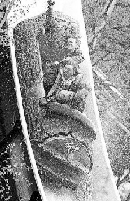

Du kjenner suget i mellomgulvet og den siste softisen truer med å komme opp igjen. Vannspruten står rett i fjeset og du gisper etter luft. Det kvikker opp med en forfriskende tur i tømmerrenna på TusenFryd. Noen hyler, andre ler og enkelte har nok med å holde hendene foran fjeset. Men moro er det. Vil du ha mer spenning er det bare å ta plass i loopen. Vi garanterer at du holder pusten mesteparten av tiden. Eller la "surprise" snu hele verden på hodet for deg.Mulighetene for å kjede seg på TusenFryd er små. Om du ikke er av den fartsglade typen er det nok av andre spenningsmomenter. Hva med en klatretur metervis oppetter en slett vegg? Med bare noen små hull til å fingre og tåspisser i... En tur gjennom spøkelseshuset glemmer du nok heller ikke med det første.
350.000 mennesker besøkte TusenFryd i fjor, og det blir neppe færre i år. Barnefamiliene er nok dominerende, men det er heller ikke uvanlig at store bedrifter sender hele staben til fornøyelsesparken for å gi den litt avstressing. Og det er klart at når Morgan Kane kommer ut på plankefortauet, setter hendene i siden og myser med sammenknepne øyne oppover langs gata, da er det morsomt selv for voksne.
Sulten kan stilles mange steder i parken, enten du liker lang mat, rundt mat, sprø mat, klissete mat, varm mat eller kald mat. Men vær obs! Dersom du ber om ei bøtte popkorn så får du ei bøtte! Greit nok, men vi kom i skade for å be om to...!
I år kan parken by på mumi-parade i hele juni, Donald-show i første del av juli, "Bærre lækkert" og Traveling Strawberries fra 15. til 23. juli, en ny mumi-parade fra 24. juli frem til 11. august, og Lion King 12., 13., 19. og 20. august. 2. og 3. september blir det Sesam stasjon. Ellers blir det daglig underholdning fra scenen, og spesialitetene fra i fjor med blant annet Anne-Cath. Vestly-seksjonen fortsetter også i år.
Priser: Kjørepass kr. 110,- og kr. 90,- (under 140 cm). Barn under 3 år kr. 60,-.
Åpningstider: 10.30 - 20.00 frem til 20.august. Etter 20. august kun lørdager og søndager. Det er også mulig å kjøpe kombibillett for både TusenFryd og VikingLandet.
Opplysninger: Tlf. 64 94 63 63.